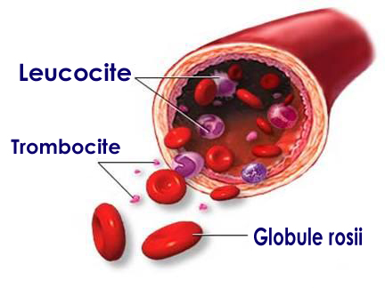
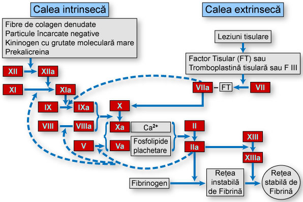

-
Sângele  Sângele este un ţesut lichid, compus dintr-o parte lichidă (plasmă -55%) şi una solidă (elemente figurate -45%), care circulă într-un sistem închis (sistemul circulator). Faţă de alte ţesuturi, celulele sângelui nu sunt imobilizate, ci ele "plutesc" într-un lichid vâscos (plasma). Datorită acestui fapt, sângele este un ţesut mobil care reuşeşte să se strecoare în toate părţile corpului.
- - transportul diferitelor substanţe spre locul lor de destinaţie; ţesuturi şi celule (substanţe nutritive, produşi intermediari, enzime, hormoni, etc.),
- - respiraţia tisulară (transportul oxigenului dinspre plămâni spre celule şi a dioxidul de carbon dinspre celule spre plămâni),
- - epurarea organismul (descărcarea din mediul intern, prin organele de eliminare, mai ales prin rinichi, a produşilor de dezasimilaţie şi a toxinelor),
- - transformarea unor substanţe (prin enzimele pe care le conţine şi mai ales prin transportul compuşilor spre ficat),
- - imunitatea organismului (prin anticorpii pe care îi conţine),
- - repartizarea şi reglarea căldurii în organism,
- - menţinerea constantă a echilibrului acido-bazic şi a balanţei hidrice,
- - reconstrucţii organice, acolo unde este necesar.
-
Deşi sângele se reconstituie în permanenţă, compoziţia sa rămâne aproape invariabil constantă. Acest echilibru funcţional, poartă denumirea de homeostază. Homeostaza este controlată şi dirijată de către sistemul neuro-endocrin cu participarea organelor hematoformatoare - pe de-o parte şi a unor aparate (respirator, excretor) - pe de altă parte. Astfel, prin analize de laborator, se pot determina valorile multor elemente circulante, care în mod normal trebuie să rămână relativ constante, ca:
- - glicemia (nivelul glucozei din sânge),
- - nivelul lipidelor (lipide totale, trigliceride, colesterol) din sânge,
- - nivelul proteinelor din sânge şi raportul dintre albumine şi globuline
- - valoarea unor minerale (fier, calciu, magneziu, sodiu, etc.).
-
Procesul de coagulare a sângelui este realizat prin intermediul unei fracţiuni a proteinelor plasmatice; fibrinogenul, care este precursorul solubil al fibrinei. La apariţia unor hemoragii, fibrinogenul trece în fibrină, proteină cu structură filamentoasă, deosebit de ramificată. Eritrocitele şi trombocitele sunt prinse în reţeaua filamentoasă şi sunt supuse dezintegrării. Astfel se formează cheagul, care la început aderă la pereţii vaselor de sânge, şi serul. Coagularea sângelui, deci transformarea fibrinogenului în fibrină, depinde de o serie de factori, care activându-se acţionează în cascadă. Coagularea reprezintă un proces deosebit de important, prin efectul antihemoragic prompt promovat. Însă stoparea naturală a hemoragiilor, nu se datorează exclusiv coagulării sângelui. Procesul antihemoragic, numit hemostază, implică şi participarea altor factori, care împreună reuşesc nu numai să oprească sângerarea, dar şi să refacă în totalitate vasul de sânge lezat.Coagularea sângelui şi hemostaza (stoparea hemoragiilor) 
Rolul sângelui este acela de a asigura: